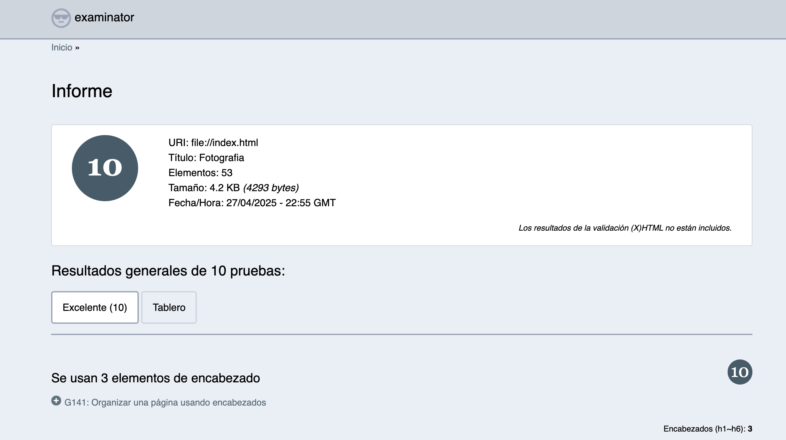
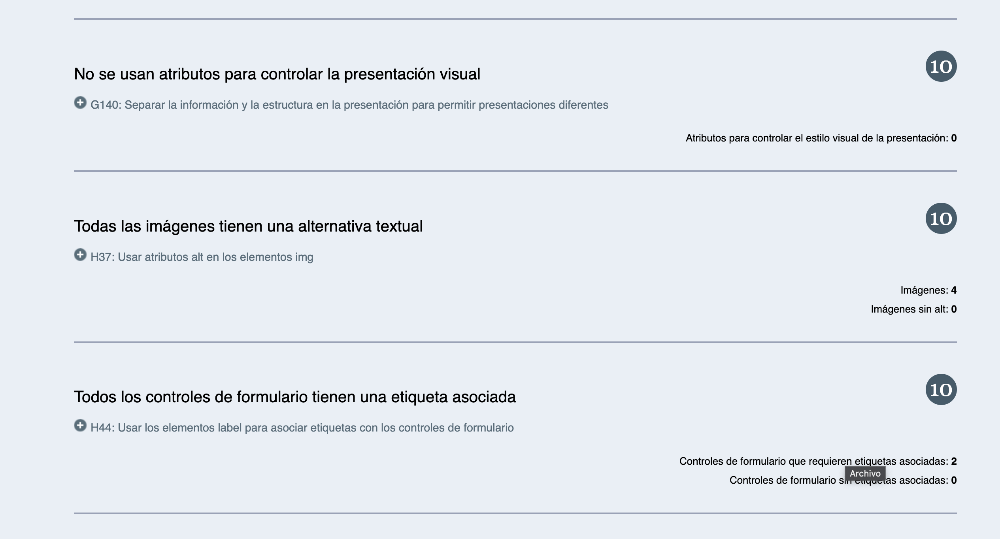
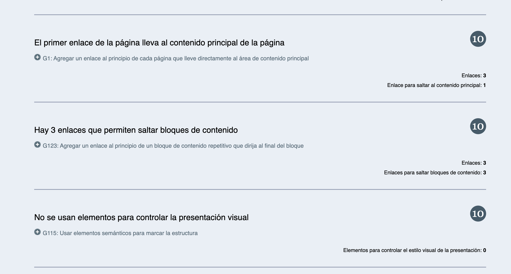
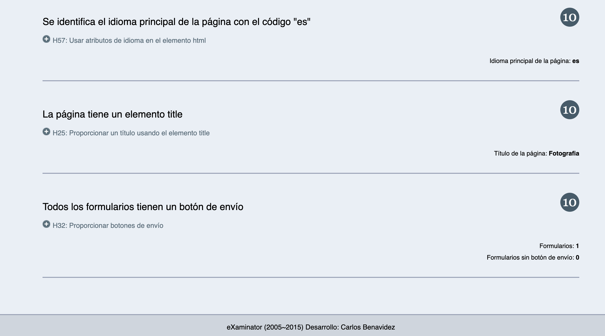

Fotografía tu momento
.jpg)
Detalle
La fotografía familiar busca retratar los lazos, el amor y las relaciones dentro de la familia. Estas sesiones suelen ser más cercanas y emocionales, capturando la conexión entre los miembros de la familia en un ambiente relajado y genuino. Es ideal para crear recuerdos duraderos de momentos compartidos en familia, como celebraciones, paseos o simplemente un día en casa.
.jpg)
Detalle
La fotografía infantil captura los momentos más especiales y tiernos de los niños, desde sus primeras sonrisas hasta sus logros más importantes. Se enfoca en resaltar la inocencia, la diversión y la personalidad de los pequeños a través de imágenes naturales y espontáneas. Es una forma de inmortalizar la infancia con imágenes llenas de color, alegría y emoción.
.jpg)
Detalle
La fotografía empresarial está orientada a crear imágenes profesionales para mostrar la identidad, los valores y la imagen de una empresa. Estas fotos se utilizan en sitios web, material promocional, perfiles de redes sociales y otros medios corporativos. Pueden incluir retratos de los empleados, fotos de productos, oficinas o eventos empresariales, con el objetivo de proyectar una imagen de profesionalismo y confianza.
Formulario de contacto
Validacion de Accesibilidad



